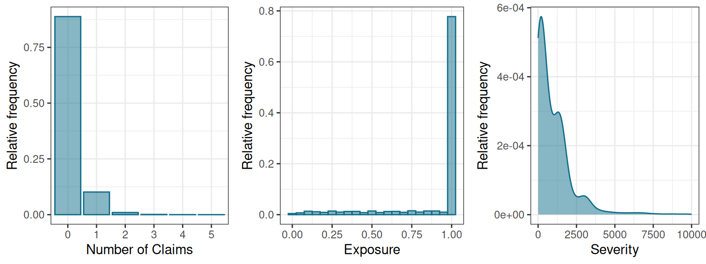
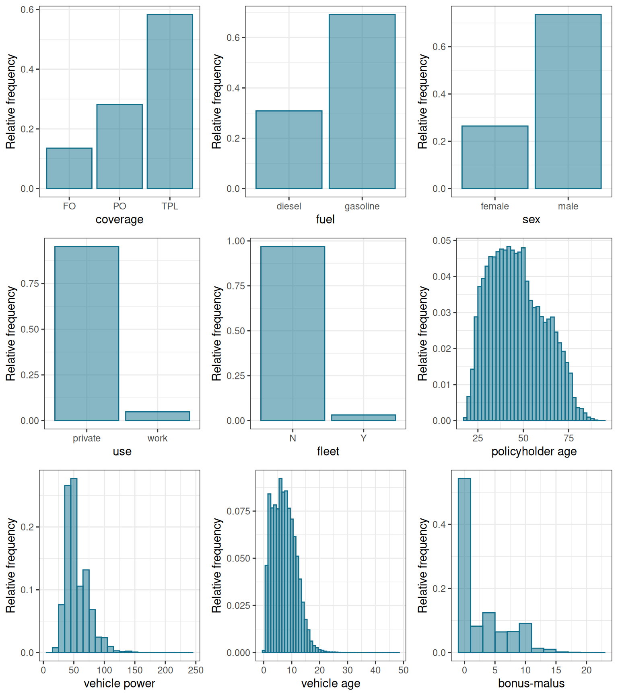
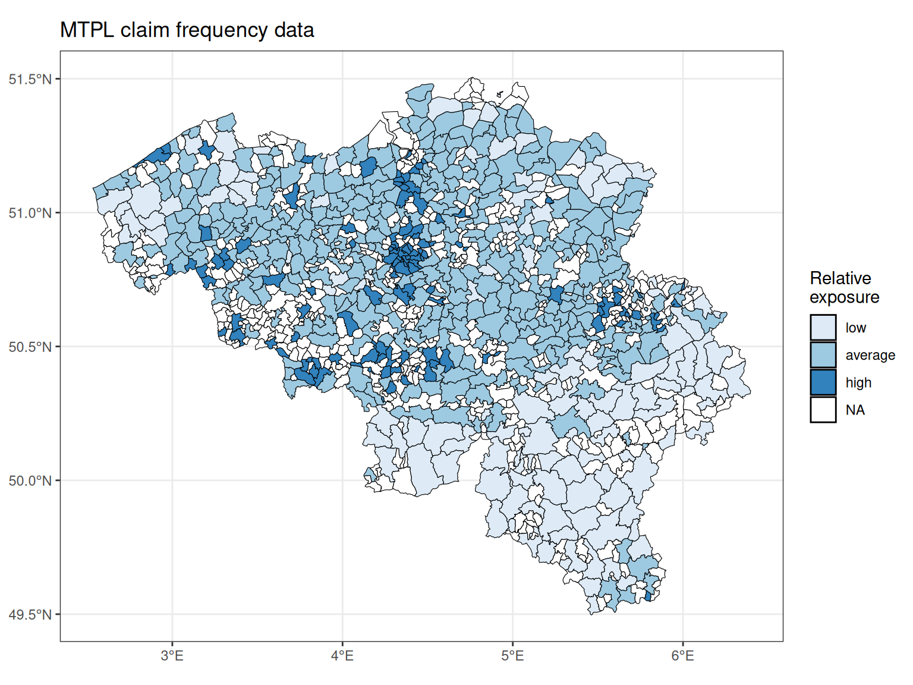
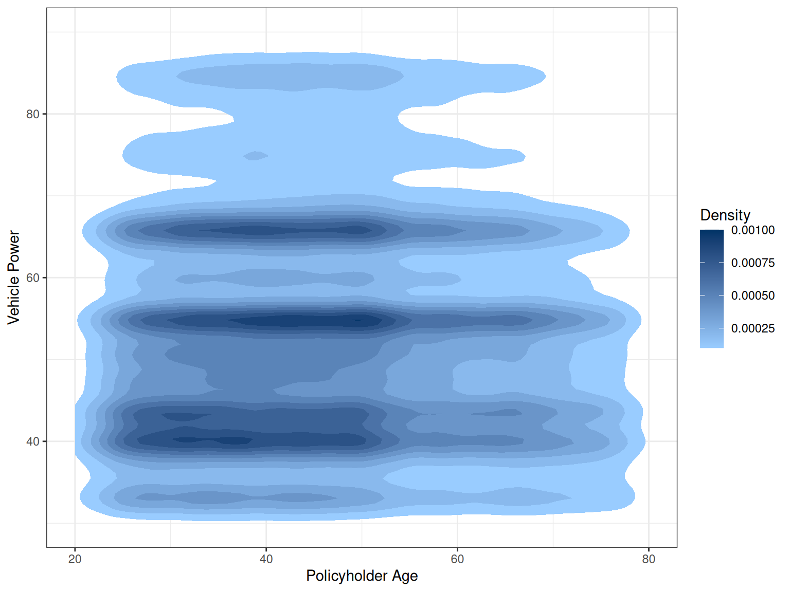

| Belgian Motor Data | ||||||||||||||
|---|---|---|---|---|---|---|---|---|---|---|---|---|---|---|
| nclaims | amount | avg | expo | coverage | fuel | use | fleet | sex | ageph | bm | agec | power | pc | town |
| 1 | 1,618.00 | 1,618.00 | 1.00 | TPL | gasoline | private | N | male | 50 | 5 | 12 | 77 | 1000 | BRUSSEL |
| 0 | 0.00 | NA | 1.00 | PO | gasoline | private | N | female | 64 | 5 | 3 | 66 | 1000 | BRUSSEL |
| 0 | 0.00 | NA | 1.00 | TPL | diesel | private | N | male | 60 | 0 | 10 | 70 | 1000 | BRUSSEL |
| 0 | 0.00 | NA | 1.00 | TPL | gasoline | private | N | male | 77 | 0 | 15 | 57 | 1000 | BRUSSEL |
| 1 | 155.97 | 155.97 | 0.05 | TPL | gasoline | private | N | female | 28 | 9 | 7 | 70 | 1000 | BRUSSEL |
Review of Data Driven Binning Strategy for Insurance Tariff Classes
Overview
A data driven strategy to bin continuous and spatial risk factors in order to obtain categorical risk factors with a limited number of levels.
“Generalized additive models (GAMs) extend the framework of GLMs and allow for smooth continuous effects in the predictor structure. This results in a statistically more flexible model compared to the GLM. In practice however, actuaries tend to prefer the simplicity of GLMs with categorical risk factors over GAMs with smooth effects, because pricing models should be interpretable, intuitive, explainable to clients and regulators, easy to program and adjustable to marketing needs and benchmark studies with competitors.”
Authors frame this paper between two existing approaches (? according to who) of handling different types of risk factors (features) (categorical, continuous, spatial) in insurance pricing literature:
- Predefined bins for the continuous and spatial features. A disadvantage of which is that the response variable isn’t taken into account in the binning process.
- Develop GAMs for pricing with flexible effects of continuous and spatial risk factors. Presumably these don’t align well with the production requirements of an insurance company?
https://katrienantonio.github.io/publication/
https://katrienantonio.github.io/publication/2018-data-driven/
https://katrienantonio.github.io/publication/2021-boosting/
tl;dr
“… a general framework that aligns the statistical advantages of flexible modeling with GAMs to the requirements of a production environment in an insurance company.”
Illustrates a basic strategy to construct tariff classes in GLMs in a data driven way.
Bin continuous and spatial risk factors based on their GAM effects, resulting in categorical risk factors which are easily deployed in a GLM.
Start from GAMs with smooth effects and transform these models into GLMs with categorical effects that satisfy the practical needs of the company to present and explain to internal and external stakeholders.
Perform an exhaustive search for the optimal GAM model without taking account interactions between the risk factors.
In the next step perform an additional exhaustive search for meaningful interactions which improve the model fit, only exploring interactions between continuous risk factors which have been selected in the first step.
EXPAND THIS BY USING PURE PREMIUM
The Data
Belgian motor data. At policyholder level. Typical motor claim & loss distribution.
| Variable | Description |
|---|---|
| nclaims | The number of claims filed by the policyholder. |
| exp | The fraction of the year 1997 during which the policyholder was exposed to the risk. |
| amount | The total amount claimed by the policyholder in Euros. |
| coverage | Type of coverage provided by the insurance policy: TPL, PO or FO. |
| TPL = only third party liability, BI/PD | |
| PO = partial omnium = TPL + limited material damage, BI/PD + Coll | |
| FO = full omnium = TPL + comprehensive material damage. BI/PD + Coll + Comp | |
| fuel | Type of fuel of the vehicle: gasoline or diesel. |
| sex | Gender of the policyholder: male or female. |
| use | Main use of the vehicle: private or work. |
| fleet | The vehicle is part of a fleet: yes or no. |
| ageph | Age of the policyholder in years. |
| power | Horsepower of the vehicle in kilowatt. |
| agec | Age of the vehicle in years. |
| bm | Level occupied in the former compulsory Belgian bonus–malus scale. From 0 to 22, a higher level indicates a worse claim history. |
| long | Longitude coordinate of the center of the municipality where the policyholder resides. |
| lat | Latitude coordinate of the center of the municipality where the policyholder resides. |
Data Example
Exploratory Data Analysis


Further looking at spatial data and data interactions.

Apparently there might be some interaction between vehicle power and driver age in the data.
